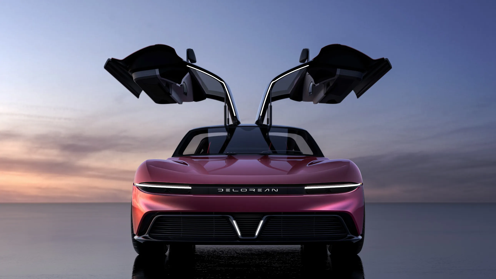
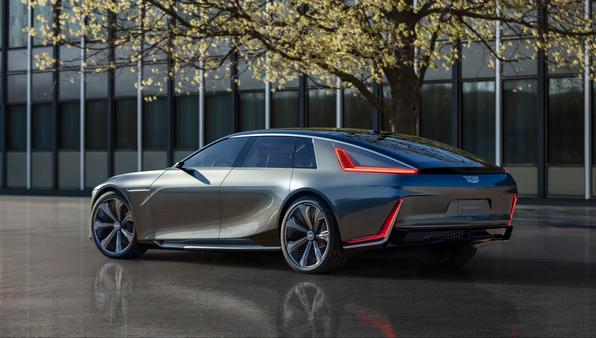
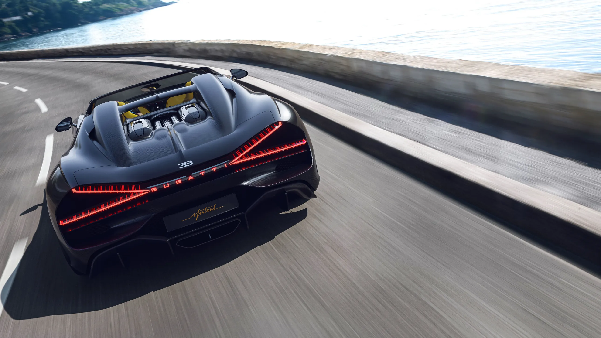

Czinger could be just another fantastical seven-figure hypercar-maker, rolling out evanescent concepts. But its uniqueness is in its manufacturing process: The cars are 3D printed. These two fresh hybrid models are a version of the 21C, optimized for top speed, and a four-seat grand touring vehicle.
Making a topless version of the outrageous Chiron hypercar isn’t as simple as removing the roof. For the $5-million Mistral, Bugatti designers created an entirely original vehicle, front to back. We’re especially fond of the wraparound windshield, the stubby rear end, and the wild X-shaped taillights.
BMW’s Competition Sports Lightweight (CSL) cars are track-ready with weight removed and power added. This latest version of the brand’s M4 sports coupe adheres to that recipe, with output increased to a rousing 543 hp and weight lowered by nearly 250 pounds. Only a thousand of these cars will be offered, starting at $140,895.
Looking toward our electrified—and, perhaps one day, our self-driving—automotive future, the four-ring brand has, over the past few years, previewed a trio of concepts: an urban runabout, a luxury sedan, and a lifestyle convertible grand tourer. All three were gathered together this year for the first time.
To celebrate the 10th anniversary of its Q division—which creates limited-edition vehicles for top clients—Aston Martin showed this coach-built open car influenced by its winning 1950s race cars. Also on hand was a production-ready version of its menacing Vantage V12, now in convertible form.